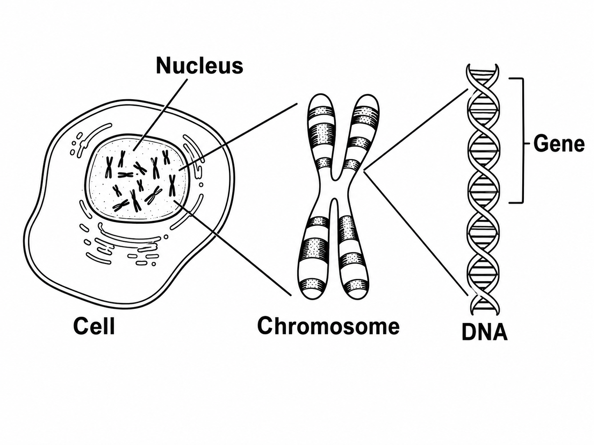

Year 8 revision resource covering DNA, genes and chromosomes, inheritance, changes in DNA, natural selection and extinction.
Learn Genetic information is stored in the nucleus of cells. DNA is a molecule that carries instructions. A gene is a short section of DNA that codes for a characteristic. DNA is organised into chromosomes.
A long molecule carrying genetic instructions.
A section of DNA that helps determine a characteristic.
A long coiled structure made of DNA, found in the nucleus.
Try it Use the diagram to review where genetic information is found.

| Question | Student answer |
|---|---|
| 1. Where are chromosomes found? | |
| 2. What is a gene? | |
| 3. Which order is correct? |
Learn Inheritance is the passing of genetic information from parents to offspring. Offspring inherit genes from both parents, so they often have a mixture of characteristics from their parents.
A feature passed on genetically, such as natural eye colour or blood group.
Differences caused by surroundings or lifestyle, such as language spoken or scars.
Some features are affected by both genes and environment, such as height or body mass.
Try it Classify each characteristic.
| Characteristic | Student answer |
|---|---|
| Blood group | |
| Language spoken | |
| Height |
Check Use the simple inheritance model below. B represents brown eyes and b represents blue eyes. In this simplified model, brown is dominant and blue is recessive.
| B | b | |
|---|---|---|
| B | BB | Bb |
| b | Bb | bb |
| Question | Student answer |
|---|---|
| Which genotype gives blue eyes in this simplified model? | |
| How many of the four outcomes contain at least one B allele? | |
| What fraction of outcomes are bb? |
Learn A mutation is a change in DNA. Mutations can be harmful, neutral or sometimes beneficial. Variation caused by mutation can be inherited if it occurs in sex cells.
No noticeable effect on the organism.
Reduces survival or causes a problem.
Helps survival or reproduction in a particular environment.
Check Classify the mutation scenario.
| Scenario | Student answer |
|---|---|
| A change in DNA has no effect on the protein produced. | |
| A mutation gives bacteria resistance to an antibiotic. The bacteria are then exposed to that antibiotic. | |
| A mutation stops an important enzyme from working. |
Learn Natural selection happens when individuals with helpful characteristics are more likely to survive, reproduce and pass on their genes. Over many generations, the helpful characteristic becomes more common.
Try it Use the environment model to see how camouflage affects survival.
| Question | Student answer |
|---|---|
| In the current environment, which beetles are more likely to survive? | |
| Why does that characteristic become more common? |
Learn Extinction happens when no individuals of a species remain alive. It can happen when a species cannot adapt quickly enough to changes in its environment.
Climate or habitat changes can make survival difficult.
A new threat can reduce population size quickly.
Species may lose food, space or habitat.
Check Identify the cause of extinction risk.
| Scenario | Student answer |
|---|---|
| A forest is cut down and the species loses its habitat. | |
| A new virus spreads through a small population. | |
| A new species uses the same food source and is better adapted. |
Learn Scientists use data, fossils and observations to explain evolution. Graphs can show how a characteristic or population changes over time.
| Generation | % dark beetles |
|---|---|
| 1 | 20 |
| 2 | 35 |
| 3 | 55 |
| 4 | 70 |
| 5 | 82 |
| Question | Student answer |
|---|---|
| What trend is shown? | |
| What is the change from generation 1 to 5? | |
| Which explanation best fits the data? |
1. Where is DNA found in a cell?
2. A gene is...
3. A chromosome is made from...
4. Inheritance means...
5. A mutation is...
6. Extinction means...
7. Is blood group inherited, environmental, or both?
8. Is language spoken inherited, environmental, or both?
9. Explain why height can be affected by both genes and environment.
10. Complete the Punnett square for Bb × Bb, then give the fraction of outcomes that are bb.
| B | b | |
|---|---|---|
| B | ||
| b |
Fraction that are bb:
11. In the beetle data, dark beetles increase from 20% to 82%. Calculate the change.
12. Name one cause of extinction.
13. Explain natural selection using the words variation, survival and reproduce.
14. Why does a helpful characteristic become more common over generations?
15. Explain why mutations are not always harmful.
16. Explain why antibiotic resistance can spread in bacteria.
17. Explain why fossils are useful evidence for evolution.
18. Explain why a species with low variation may be at greater risk of extinction.
19. Why is “an animal changes because it needs to” not a good explanation of evolution?
20. Use evidence from the beetle data to support natural selection.